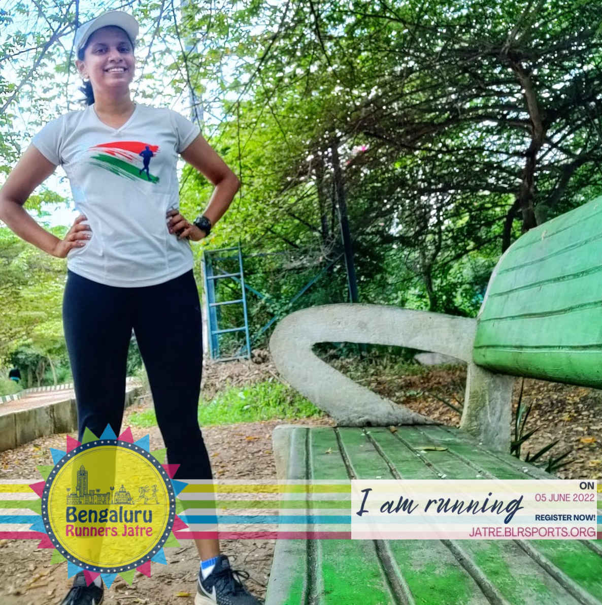

Where is my creative ?
Want to flaunt in social media that you are running our event?
We got you covered. Use our watermark. Here is a sample below !
Grab yours now !
Choose your style, click on any of the pictures from below!
